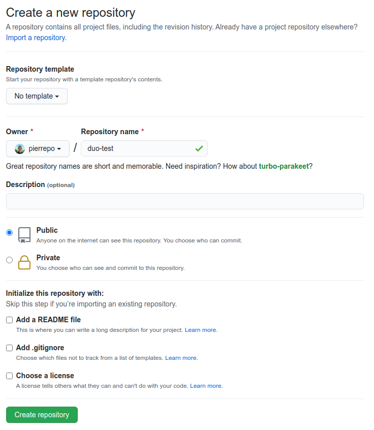
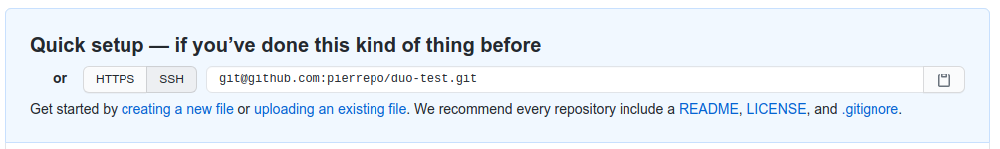

Premier dépôt#
1 Création d’un nouveau dépôt sur GitHub#
Dans l’interface de GitHub, tout en haut à droite, cliquez sur le symbole + puis sur « New repository » :

Indiquez ensuite duo-test comme « Repository name » :

Laissez tous les autres paramètres par défaut.
Puis cliquez sur le bouton vert « Create repository ».
Enfin, notez et copiez l’adresse de connexion de votre dépôt qui débute par git@github.com, vous en aurez besoin pour la suite :

Warning
Si l’adresse de votre dépôt ne débute pas par git@github.com mais par https://github.com alors cliquez sur le bouton gris « SSH » pour obtenir l’adresse qui débute par git@github.com
2 Connexion du dépôt distant (sur GitHub) à votre machine locale#
Depuis un terminal sur le JupyterLab de l’IFB, vérifiez que vous êtes dans le bon répertoire de travail :
$ pwd
/shared/projects/202304_duo/LOGINIFB/intro-git
où LOGINIFB est votre identifiant IFB.
Exécutez ensuite la commande suivante pour cloner votre dépôt distant (qui est sur GitHub) sur le serveur de l’IFB :
$ git clone git@github.com:LOGINGITHUB/duo-test.git
où LOGINGITHUB est votre identifiant GitHub (pas celui de l’IFB).
Note
git pourra éventuellement se plaindre avec le message
warning: You appear to have cloned an empty repository.C’est tout à fait normal, le dépôt est vide pour le moment, mais nous allons rapidement y ajouter des fichiers.L’adresse de votre dépôt distant doit commencer par
git@github.com
Déplacez-vous maintenant dans le répertoire créé et qui correspond à votre dépôt git :
$ cd duo-test
Affichez le contenu du répertoire.
Ce répertoire ne contient rien. C’est normal, votre dépôt est vide. Mais ce répertoire est un peu particulier car il contient en fait un répertoire caché .git. Affichez ce répertoire caché avec la commande :
$ ls -al
C’est ce répertoire qui va contenir toute la mémoire du dépôt, donc tout l’historique du dépôt. 🧐 Ne le supprimez pas et ne modifiez pas non plus.
Note
L’option -a de la commande ls affiche tous les fichiers et répertoires d’un répertoire, y compris les fichiers et répertoires cachés qui débutent par un point.
3 Configuration du dépôt local#
Avant de commencer à créer et modifier des fichiers dans votre dépôt, il faut dire à git qui vous êtes :
$ git config --global user.name "Prénom Nom"
$ git config --global user.email "moi@mail.com"
Warning
Adaptez le prénom, le nom et l’adresse e-mail à votre cas. Veillez à conserver les guillemets autour de Prénom Nom dans la première ligne.
Note
Ces commmandes git config ne sont à lancer qu’une seule fois sur une machine donnée, ici le cluster de l’IFB.
Vérifiez que ces paramètres sont bien pris en compte avec la commande :
$ git config --list | grep user
Les paramètres user.name et user.email devrait contenir les informations que vous avez entrées précédemment.
4 Exploration des commandes de base#
Toujours dans votre dépôt git, créez le fichier test1.txt et ajoutez-y du contenu.
Vous pouvez faire cela avec l’éditeur de texte graphique de JupyterLab, l’éditeur de texte dans le terminal nano ou plus rapidement avec la commande suivante :
$ echo "une première ligne" > test1.txt
Si vous tapez maintenant la commande git status pour savoir ce qui se passe, vous devriez obtenir :
$ git status
Sur la branche master
Aucun commit
Fichiers non suivis:
(utilisez "git add <fichier>..." pour inclure dans ce qui sera validé)
test1.txt
aucune modification ajoutée à la validation mais des fichiers non suivis sont présents (utilisez "git add" pour les suivre)
Le fichier test1.txt existe bien mais il n’est pas encore pris en charge par git. Pour cela, il faut utiliser la commande git add :
$ git add test1.txt
Un nouveau git status renvoie :
$ git status
Sur la branche master
Aucun commit
Modifications qui seront validées :
(utilisez "git rm --cached <fichier>..." pour désindexer)
nouveau fichier : test1.txt
test1.txt est désormais pris en compte par git et ses modifications sont prêtes à être validées. Pour cela, nous allons créer un commit, c’est-à-dire une photo des fichiers :
$ git commit -m "Premier commit"
Vous devriez obtenir un résultat du type :
$ git commit -m "Premier commit"
[master (commit racine) a7b7006] Premier commit
1 file changed, 1 insertion(+)
create mode 100644 test1.txt
Parfait ! Il est maintenant temps d’envoyer ce premier commit sur GitHub :
$ git push
Énumération des objets: 3, fait.
Décompte des objets: 100% (3/3), fait.
Écriture des objets: 100% (3/3), 236 octets | 236.00 Kio/s, fait.
Total 3 (delta 0), réutilisés 0 (delta 0)
To github.com:pierrepo/duo-test.git
* [new branch] master -> master
Retournez maintenant sur la page de votre dépôt sur GitHub (a priori https://github.com/LOGINGITHUB/duo-test avec LOGINGITHUB votre identifiant GitHub) et rafraichissez-la.
Vous devriez voir le fichier test1.txt ! 🥳

Depuis le terminal Bash Ubuntu, modifiez une seconde fois le fichier test1.txt :
$ echo "et hop une deuxième ligne !" >> test1.txt
Visualisez les différences par rapport au commit précédent avec la commande :
$ git diff
Une nouvelle ligne est marquée par le symbole +. Une ligne supprimée est marquée par le symbole -. Les lignes modifiées apparaissent avec le symbole + et -.
Exemple de résultat :
$ git diff
diff --git a/test1.txt b/test1.txt
index 0d8e693..f9f2480 100644
--- a/test1.txt
+++ b/test1.txt
@@ -1 +1,2 @@
une première ligne
+et hop une deuxième ligne !
Ajoutez (encore) le fichier modifié puis créez un nouveau commit :
$ git add test1.txt
$ git commit -m "Ajout d'un nouveau message"
Et envoyez ce nouveau commit sur Github :
$ git push
Énumération des objets: 5, fait.
Décompte des objets: 100% (5/5), fait.
Écriture des objets: 100% (3/3), 305 octets | 305.00 Kio/s, fait.
Total 3 (delta 0), réutilisés 0 (delta 0)
To github.com:pierrepo/duo-test.git
404b6ff..5adb360 master -> master
Retournez sur GitHub pour observer ce nouveau commit :

Depuis le terminal, affichez l’historique avec la commande git log :
$ git log
commit 5adb360b9682320e4fe32382d79d9b9454d657b3 (HEAD -> master, origin/master)
Author: Pierre Poulain <pierre.poulain@cupnet.net>
Date: Tue Apr 6 21:00:36 2021 +0200
Ajout d'un nouveau message
commit 404b6ff031bd9ba0daa586c7a524eb8ef409ec1c
Author: Pierre Poulain <pierre.poulain@cupnet.net>
Date: Tue Apr 6 20:52:47 2021 +0200
Premier commit
Si besoin, pressez la touche q pour quitter le journal de git.
Vous constatez que git mémorise :
qui a créé le commit (par exemple : Pierre Poulain pierre.poulain@cupnet.net) ;
quand le commit a été créé (par exemple : Tue Apr 6 21:00:36 2021 +0200) ;
et pourquoi il a été créé (par exempe : Ajout d’un nouveau message).
Git mémorise aussi quels fichiers ont été modifiés. Nous verrons plus tard comment les retrouver.
De plus, git attribue un identifiant à chaque commit (ici : 404b6ff031bd9ba0daa586c7a524eb8ef409ec1c). Cet identifiant est unique et permet de retrouver un commit particulier.
5 Modification d’un fichier depuis GitHub#
Depuis l’interface de GitHub, cliquez sur le bouton vert « Add a README »
Dans l’éditeur en ligne, ajoutez le texte suivant :
# duo-test
Dépôt git de test pour le **DU omiques**.

En bas de la page, indiquez comme titre de commit : « Création README.md » (sans les guillemets), puis cliquez sur le bouton vert « Commit new file ».

Bravo ! Vous avez créé un nouveau commit, mais cette fois directement depuis l’interface de GitHub :

Retournez dans le terminal et synchronisez votre dépôt git local avec GitHub :
$ git pull
remote: Enumerating objects: 4, done.
remote: Counting objects: 100% (4/4), done.
remote: Compressing objects: 100% (3/3), done.
remote: Total 3 (delta 0), reused 0 (delta 0), pack-reused 0
Dépaquetage des objets: 100% (3/3), 716 octets | 358.00 Kio/s, fait.
Depuis github.com:pierrepo/duo-test
5adb360..4c65a31 master -> origin/master
Mise à jour 5adb360..4c65a31
Fast-forward
README.md | 3 +++
1 file changed, 3 insertions(+)
create mode 100644 README.md
Vérifiez que le fichier README.md est bien présent avec la commande ls puis affichez son contenu :
$ cat README.md
Vérifiez également que le commit créé sur GitHub est bien enregistré dans l’historique :
$ git log
Si besoin, pressez la touche q pour quitter le journal de git.